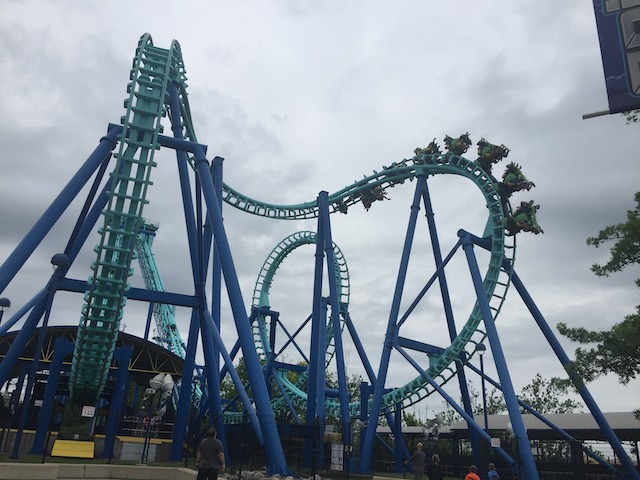
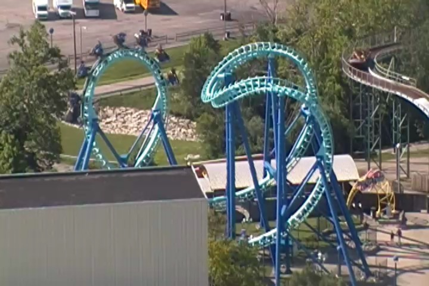

| |
Invertigo Review

We're here at Kings Island to ride Invertigo. Invertigo is a cool ride as it is a Boomerang in all ways aside from the fact that it is an inverted coaster, making it one of the three Inverted Boomerangs in existance today. After the doors open, you get into the seat and pull down the shoulder restraint and buckle the seatbelt. One interesting thing about these trains is that you end up facing people right by you. Then the floor drops and away you go. Then it's up the lifthill we go. While it's fun to kinda hang there, what we're really hoping for is to get stuck on the lifthill. Because if we get stuck on the lifthill for a couple minutes, we'll be on TV as the Cincinatti News comes and freaks out and will give us free stuff! I bet the news people in Cincinatti have already written a story on this and are just waiting for the ride to get stuck on the lifthill so they too, can freak out about it and boost their views. But for today, their wish will not be granted. Then we drop down into the station. We try to wave hello to those in the station, but they can only hear the screams of those around us for the doors make them unable to see us. Then we soar up into the cobra roll. Unlike on many normal boomerangs, this is completely smooth and quite a lot of fun. Then we twist into the second part of the cobra roll and dive back down. Now it's time for the loop. The loop is qute strong and provides us with quite a few forces. Now we go up the spike as now it's time for us to do it all backwards!! Or forewards if you decided to do it backwards first. Now if you're sitting across from someone who is terrified of this ride and scared to do it again, you're probably too busy laughing your ass off to notice the ride as you just keep laughing at the brick that the person shat in their pants. Then we drop back down. The loop is still pretty strong and fun in the opposite direction, then we soar back up into the cobra roll to twist around and land back into the station. While it's no Aftershock, it's still better than a normal Boomerang and is quite a lot of fun. Unfortunetly, something as simple as getting stuck on the lifthill can cause the f*cking media to freak out and treat it as if this was a mass murder accident. Hopefully the newscasters in Cincinatti are much smarter than those in Baltimore and San Jose. I doubt it though. =( Ride this as it is a very fun ride.
7/10
Location: Kings Island
Opened: 1999
Built by: Vekoma
Last Ridden: June 21, 2021
I have ridden this exact same ride at the following parks.
California's Great America
Invertigo Photos




Home
|